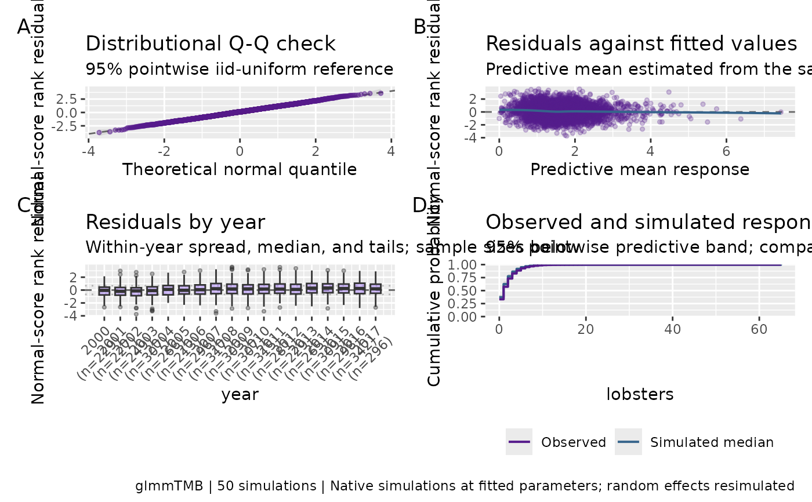

Calculate compact simulation-based residual diagnostics
Source:R/influ-residuals.R
influ_residuals.RdCalculate once, then use [plot.influ_residuals()] for a four-panel overview: a normal-score rank Q-Q plot, residuals against the predictive mean, residuals by year, and observed versus simulated response ECDFs.
Usage
influ_residuals(
model,
data = NULL,
year = NULL,
nsim = 250L,
batch_size = 25L,
seed = 1L,
grid_size = 201L,
level = 0.95
)
# S3 method for class 'influ_residuals'
print(x, ...)Arguments
- model
A fitted GLM, `mgcv` GAM, `glmmTMB`, `brmsfit`, `sdmTMB`, or single-response `tinyVAST` model. No model is fitted by this function.
- data
Original model data, retaining original row names. Usually not needed; supply it if a transformed time term hides the raw year column.
- year
Name of the time column. By default, recognise year/fishing-year names in the formula, then native time metadata or a time-named term, then the first single-variable formula term (with a warning). Ambiguous choices require an explicit override. No arbitrary grouping is selected.
- nsim
Number of complete response simulations, at least 20.
- batch_size
Maximum number of simulations requested in each batch.
- seed
Integer random seed. The caller's random-number state is restored.
- grid_size
Approximate number of ECDF grid points, at least 20.
- level
Pointwise predictive interval coverage for ECDFs, and nominal independent-uniform reference coverage for the Q-Q panel.
- x
An `influ_residuals` object.
- ...
Reserved for future methods; currently unused.
Value
An S3 `influ_residuals` object containing observation-level ranks, normal scores, predictive means, year labels, Q-Q reference coordinates, compact ECDF summaries, and explicit calculation metadata.
Details
Each simulation is a joint response vector, preserving the native method's within-draw dependence. For observation \(i\), let \(L_i\) count simulated responses below the observation and \(E_i\) count ties. The randomised finite-simulation rank is \((L_i + U_i(E_i + 1))/(B + 1)\), with independent uniform \(U_i\). Its normal score is a simulation-based quantile residual, not a Pearson residual or an exact analytic PIT. Randomisation includes zeros and other atoms without adding arbitrary noise to catches. Increase `nsim` and inspect seed sensitivity for important conclusions.
GLMs and GAMs simulate observation error at fitted parameters, including fitted smooths. `glmmTMB` uses its native simulation of new random effects. `sdmTMB` and `tinyVAST` use `type = "mle-eb"`: observation error conditional on fitted latent effects. BRMS uses joint posterior predictive draws, including existing group effects. These are different diagnostic targets, not interchangeable uncertainty estimates. The predictive mean on the horizontal axis is estimated from these same simulations, so it matches their conditioning rather than mixing in differently conditioned fitted values. No refitting, MCMC, or leave-one-out calculation is performed.
The Q-Q band is an independent-uniform reference, not a calibrated goodness-of-fit test for estimated, hierarchical, spatial, or Bayesian models. Posterior predictive ranks reuse the observations and need not be uniform. ECDF bands are pointwise simulated-response bands, not simultaneous confidence bands. Zero-inflated and delta simulations describe the combined response; they do not diagnose each component separately. Censored, multivariate, quasi-family, and non-binomial weighted fits are not supported. Native simulation failures are reported, not replaced by another family.
The object retains neither the fitted model nor an observation-by-simulation matrix. Working storage includes an observation-by-batch matrix and a grid-by-simulation matrix. Native backends may allocate additional memory. The ECDF grid spans observations and the first simulation batch; it is deliberately compact, not an exact representation of every simulated jump. For binomial GLMs and `glmmTMB`, responses are success counts (including proportion responses with integer trial weights).
Examples
if (requireNamespace("glmmTMB", quietly = TRUE)) {
data(lobsters_per_pot)
fit <- glmmTMB::glmmTMB(
lobsters ~ year + poly(depth, 3) + poly(soak, 3) + (1 | month),
family = glmmTMB::nbinom2(), data = lobsters_per_pot)
checks <- influ_residuals(fit, nsim = 50, seed = 42)
checks
plot(checks)
}
